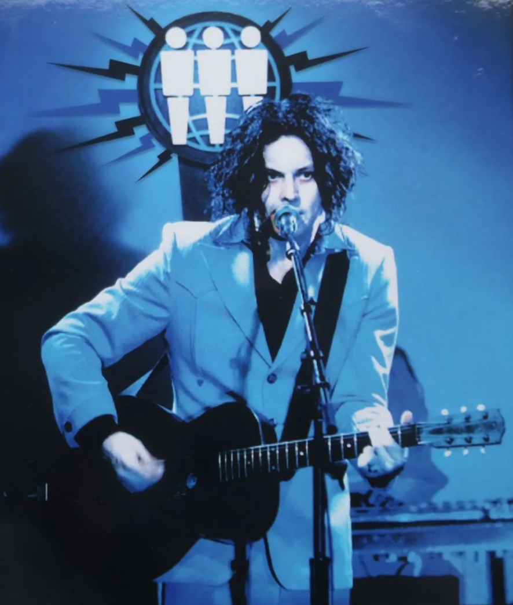

ARTIST ARCHIVE
지난 뮤지션

Jack White 잭 화이트
기타 하나, 드럼 하나로 록을 다시 날것으로 돌려놓은 사람
디트로이트 출신의 기타리스트이자 싱어송라이터 잭 화이트(Jack White). 1997년 멕 화이트와 결성한 2인조 화이트 스트라입스(The White Stripes)로 이름을 알렸다. 베이스 없이 기타와 드럼만으로 꽉 찬 소리를 만들어냈고, 빨강·하양·검정 세 가지 색으로 무대와 앨범을 통일했다. 2000년대 초 개러지 록 리바이벌의 상징이 된 이유다. 블루스를 뿌리에 두고 아날로그 녹음과 바이닐을 선호하는 그는 지금도 특유의 '손맛'이 살아 있는 록을 들려준다.
EDITOR'S COMMENT
잭 화이트의 음악은 '덜어냄'에서 시작한다. 악기를 줄이고, 색을 줄이고, 녹음 과정의 기술도 줄인다. 그렇게 남은 빈자리를 기타 톤과 목소리의 긴장감이 채운다. 매끈하게 다듬은 소리에 지쳤다면, 거칠게 긁히는 리프 한 줄이 오히려 숨통을 틔워줄 것이다. 지금 이 순간의 소리에 집중하라는 태도 역시 그의 음악과 닮았다. 답답한 날, 볼륨을 올리고 들어보자.
주요 앨범과 활동
- The White Stripes – Elephant (2003)
'Seven Nation Army'가 실린 앨범. 이 곡의 리프는 지금도 전 세계 축구장에서 응원가로 울려 퍼진다.
- The Raconteurs · The Dead Weather
밴드를 바꿔가며 파워팝과 어두운 블루스 록을 오갔다.
- Third Man Records (2009~)
내슈빌에 세운 레이블이자 레코드숍. 바이닐 부활의 한 축을 맡아왔다.
- 솔로 No Name (2024)
2025년 그래미 '베스트 록 앨범' 후보에 올랐고, 이는 솔로 경력 34번째, 통산 46번째 노미네이트였다. 그래미 수상은 총 12회다.
- 솔로 Frozen Charlotte (2026)
2026년 7월, 북미 투어 첫날에 맞춰 공개된 신작이다. 내슈빌의 서드 맨 스튜디오에서 녹음했다. 일곱 번째 솔로 앨범이다.
- 그 밖의 활동
최근 화이트 스트라입스로 로큰롤 명예의 전당에 헌액됐다. 2025년 10월에는 가사와 시, 희귀 사진을 묶은 책 『Jack White Collected Lyrics and Selected Writing Volume 1』도 냈다.